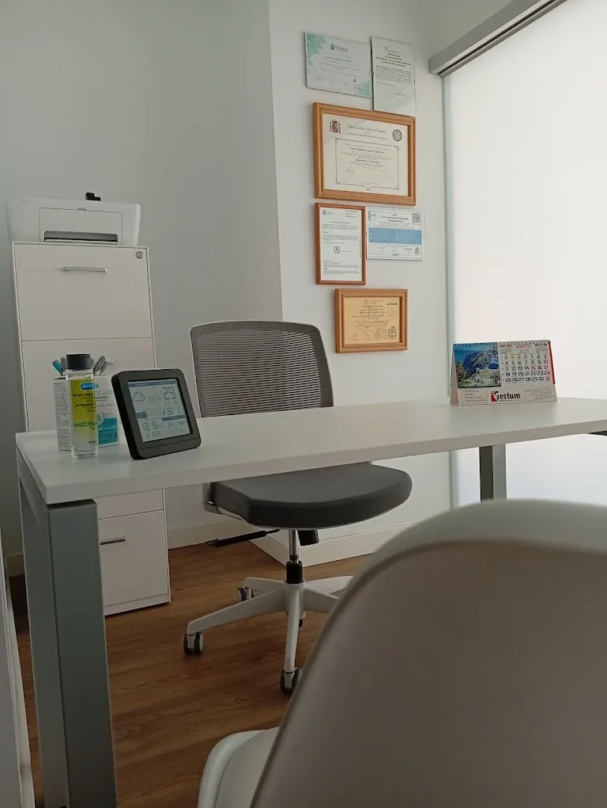
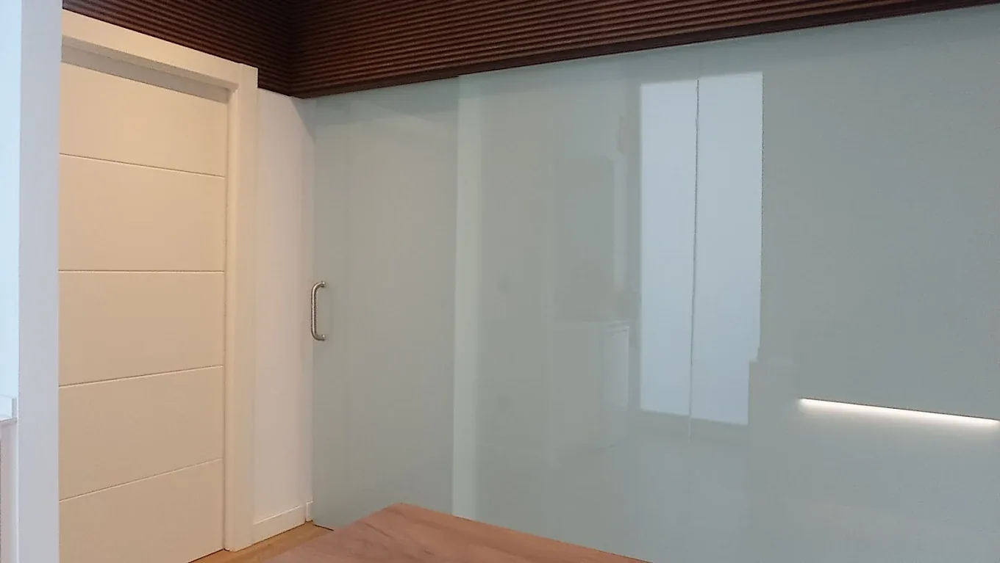

Santiago García
Fisioterapeuta · Director
Más de 10 años tratando lesiones musculoesqueléticas. Especialista en terapia manual y punción seca.
Tratamientos personalizados de terapia manual, punción seca y readaptación deportiva. Recuperar tu cuerpo es un proceso técnico — y aquí lo hacemos contigo.

Cada sesión combina valoración funcional, técnica manual y un plan activo de readaptación.
Salas privadas, material profesional y un entorno tranquilo en el corazón de Zaragoza. Cada detalle está diseñado para que te centres en una sola cosa: recuperarte.


¿Tienes dolor o una lesión?
Disponible de lunes a viernes · 608 97 30 90
Un equipo de fisioterapeutas colegiados con formación continua, especializados en terapia manual, punción seca y readaptación deportiva. Cercanos, rigurosos y comprometidos con tu recuperación.
Fisioterapeuta · Director
Más de 10 años tratando lesiones musculoesqueléticas. Especialista en terapia manual y punción seca.
Fisioterapeuta · Suelo pélvico
Experta en fisioterapia de la mujer y rehabilitación postparto. Enfoque humano y basado en la evidencia.
Fisioterapeuta · Readaptación deportiva
Acompaña la vuelta a la actividad tras lesión, con protocolos individualizados y trabajo de fuerza.
Las preguntas que más nos hacen los pacientes al reservar cita.
Cada sesión dura 50 minutos e incluye valoración funcional inicial, tratamiento manual específico (movilizaciones, terapia miofascial o punción seca si procede) y un plan de ejercicios personalizados para reforzar el trabajo en casa. Sin prisas y siempre 1 a 1.
Depende del problema y de cómo responda tu tejido. Como referencia: molestias agudas suelen resolverse en 2–4 sesiones, mientras que lesiones crónicas o readaptación deportiva requieren un plan de 6–10 sesiones. Tras la primera valoración te daremos una estimación realista y honesta.
La punción seca utiliza agujas filiformes estériles de un solo uso. Puede notarse una molestia breve al desactivar el punto gatillo, pero no es un dolor mantenido. Es una técnica muy segura aplicada por fisioterapeutas colegiados y suele aliviar contracturas y dolor crónico en pocas sesiones.
Ropa cómoda (pantalón corto o mallas), una toalla y, si dispones de ellos, informes médicos, resonancias o radiografías previas. No es imprescindible: si vienes sin nada, la valoración clínica es suficiente para diseñar el tratamiento.
Puedes reservar por WhatsApp o llamando al 608 97 30 90. Trabajamos con cita previa para dedicarte el tiempo que necesitas. Para cancelar o reprogramar, avísanos con al menos 24 horas de antelación y así podremos ofrecer ese hueco a otro paciente.
Rellena el formulario y te atenderemos directamente por WhatsApp para confirmar disponibilidad.